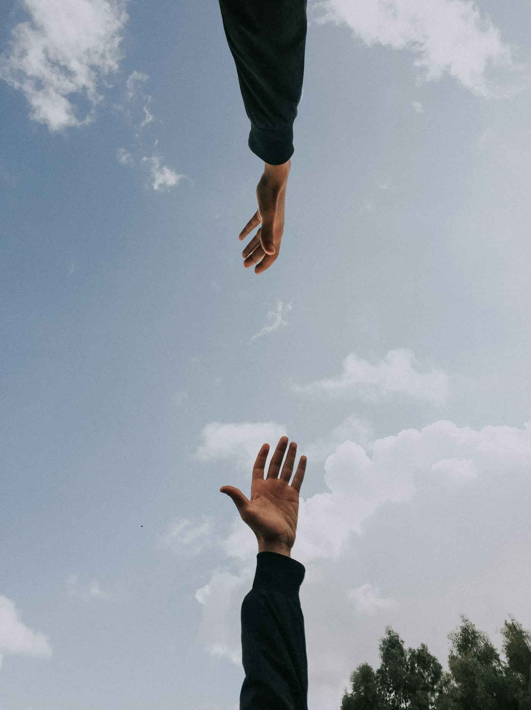
01
Pace e prevenzione dei conflitti
Formiamo mediatori e costruttori di pace e sosteniamo il dialogo fra comunità divise, con borse di studio nei Rotary Peace Center.
Professionisti e volontari che uniscono competenze e passione per servire la comunità e custodire un paesaggio patrimonio dell'umanità.
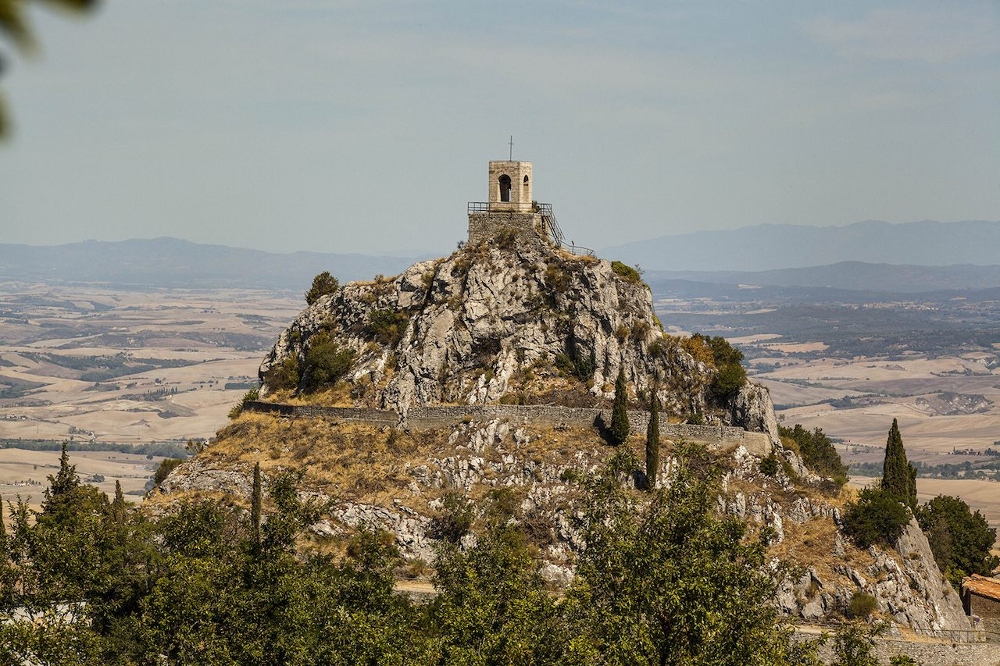
Dal 2024 lavoriamo tra Pienza, Castiglione d'Orcia e San Quirico d'Orcia per trasformare le idee in progetti concreti.
Il Rotary Club Val d'Orcia riunisce professionisti, imprenditori e volontari che condividono un impegno semplice: mettere le proprie competenze al servizio del territorio. Ogni settimana ci incontriamo per trasformare le idee in progetti concreti.
Dal 2024 lavoriamo tra Pienza, Castiglione d'Orcia e San Quirico d'Orcia, insieme a Rotary International e ai suoi 1,4 milioni di soci nel mondo, uniti dal motto "Servire al di sopra di ogni interesse personale".
"Piccoli gesti, moltiplicati da milioni di persone,
possono trasformare il mondo."
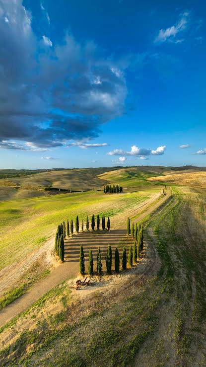
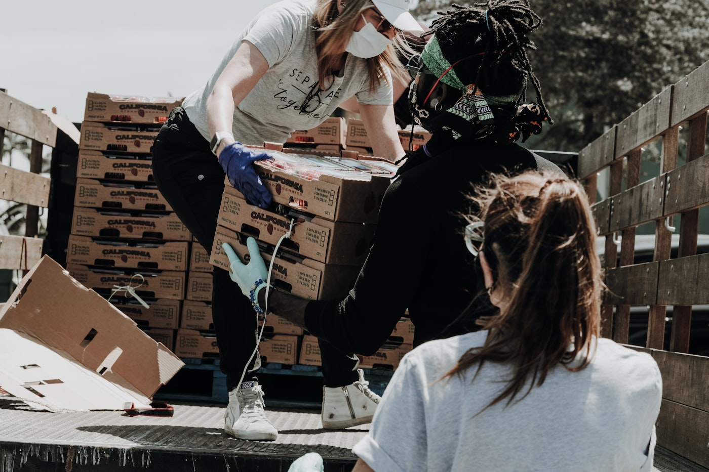
Il Rotary International riunisce 1,4 milioni di persone in oltre 200 Paesi: professionisti, imprenditori e volontari che mettono le proprie competenze al servizio del bene comune. Fondato a Chicago nel 1905 da Paul Harris, oggi conta 46.000 club.

Formiamo mediatori e costruttori di pace e sosteniamo il dialogo fra comunità divise, con borse di studio nei Rotary Peace Center.
Screening gratuiti, campagne di prevenzione e formazione del personale sanitario. Con End Polio Now i casi sono scesi del 99,9% dal 1985.
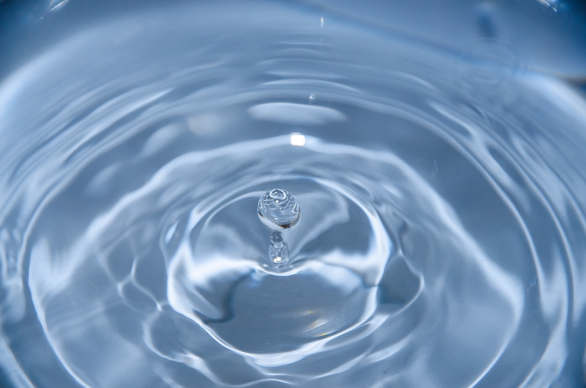
Portiamo acqua potabile, servizi igienici ed educazione all'igiene dove mancano: nessun bambino dovrebbe ammalarsi per l'acqua che beve.
Miglioriamo l'accesso a cure prenatali, vaccinazioni e assistenza neonatale per ridurre la mortalità di mamme e bambini.
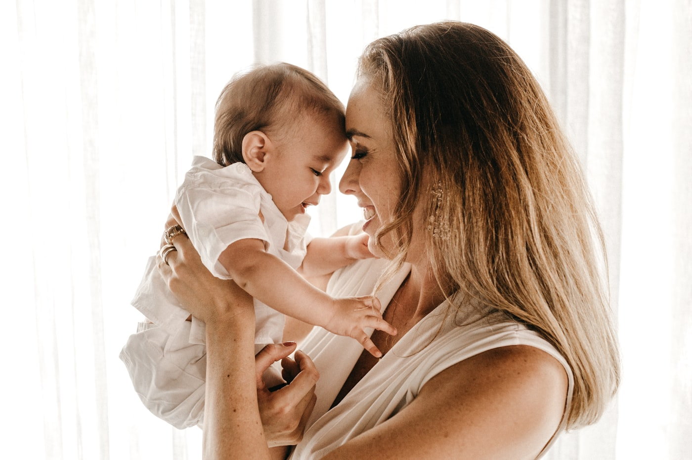
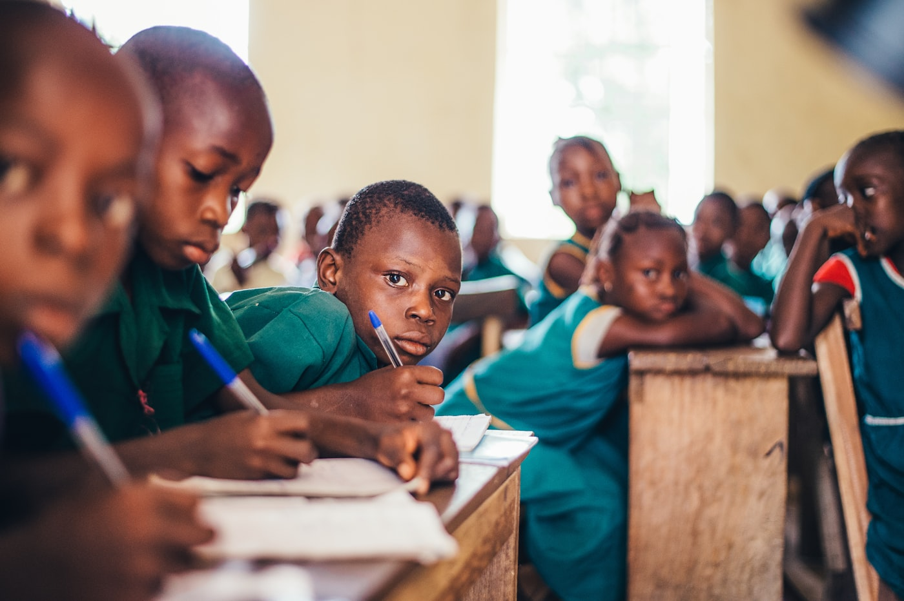
Borse di studio, sostegno alle scuole del territorio e progetti di alfabetizzazione, perché l'istruzione sia un diritto di tutti.
Sosteniamo imprenditoria locale, artigiani e giovani professionisti della valle con microcredito, formazione e mentoring.
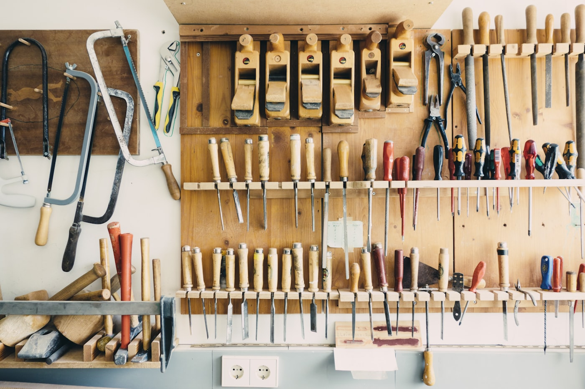
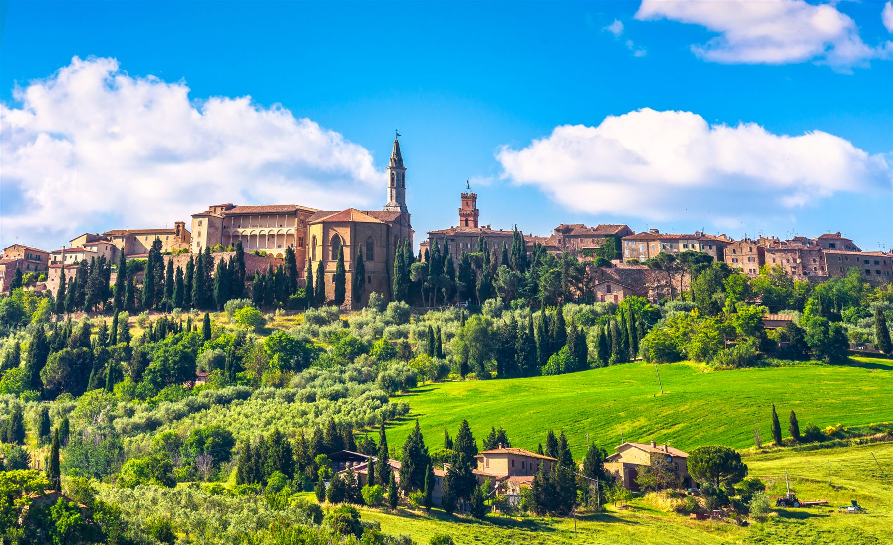
Proteggiamo il paesaggio UNESCO della Val d'Orcia, le sue acque e la biodiversità, con progetti di tutela ed educazione ambientale.
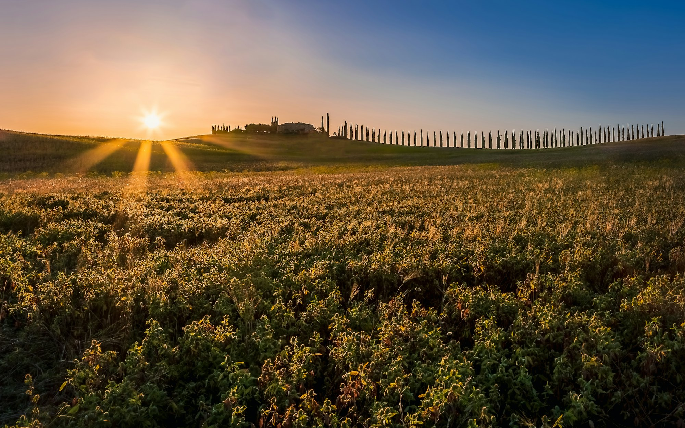
"Ci prendiamo cura delle persone e dei luoghi:
una comunità forte nasce da entrambi."
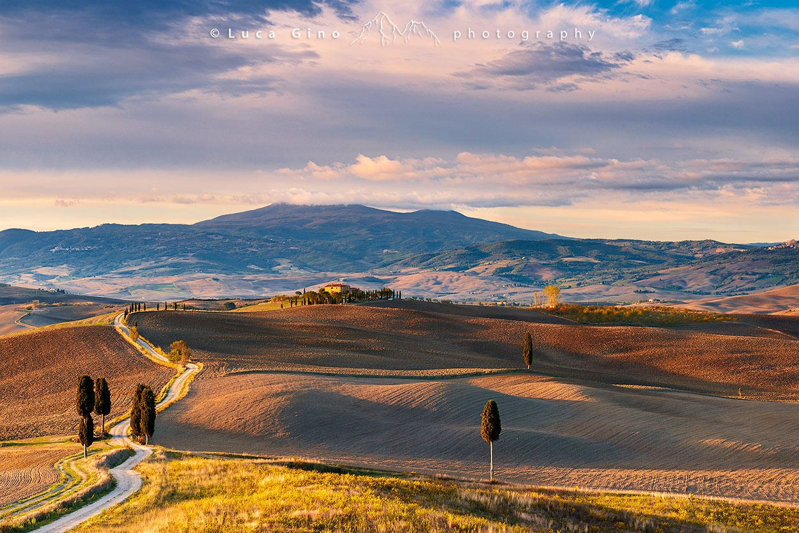
Per candidarti come socio invia una richiesta via email a rotaryclubvaldorcia@gmail.com, raccontandoci chi sei e cosa ti piacerebbe fare. Ti ricontatteremo per conoscerci di persona.
Estratti dai quotidiani digitali
che hanno raccontato il Club.
Segnaposto — il PDF dell'articolo verrà caricato a breve.
Apri il PDFSegnaposto — il PDF dell'articolo verrà caricato a breve.
Apri il PDFSegnaposto — il PDF dell'articolo verrà caricato a breve.
Apri il PDFTutte le fotografie sono utilizzate con i relativi crediti. Per ogni richiesta di rimozione o rettifica scrivere a rotaryclubvaldorcia@gmail.com.